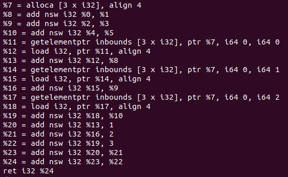
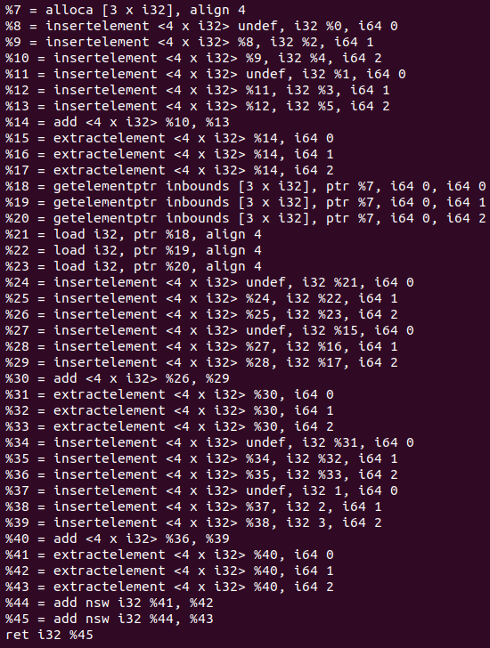
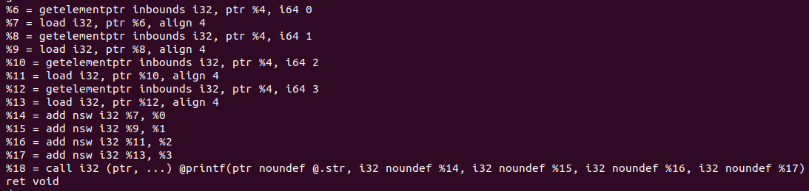
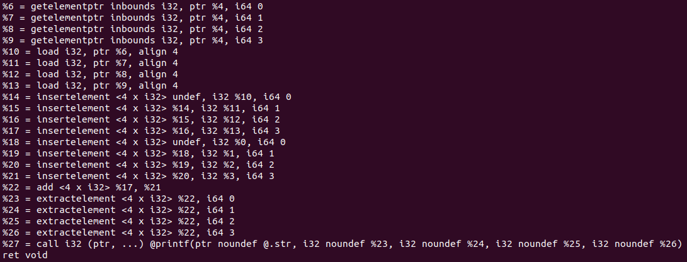
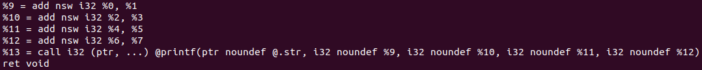
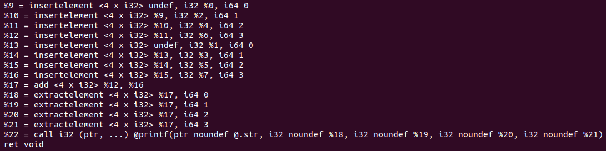

Enrico: eygreen at andrew.cmu.edu
Jonny: jsr2 at andrew.cmu.edu
ProposalBelow we show the LLVM code of three different programs, compiled with -O0 and sent through a mem2reg pass, before and after sending it through the SLP transformation pass.
Before:
After:
(The name is a bit of a misnomer. The code was changed slightly since creation.)
Before:
After:
Before:
After:
